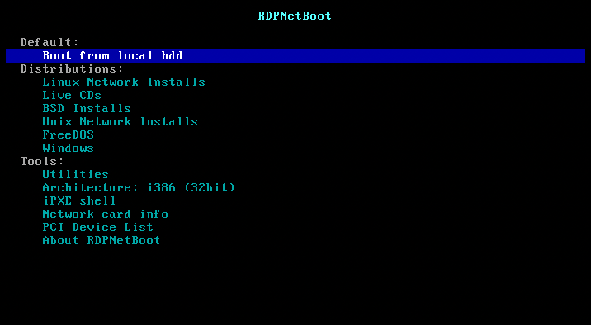

使用教程
这是RDPNetBoot的主菜单，您可以从这里进入到任何您想要的工具页面。
默认等待时间为300秒，如果您有特殊需求需要延长更长的等待时间，您可以选择自行编译。
由于iPXE固件体积限制，无法完整的加入中文字体，所以菜单页面也无法使用中文，在此向部分英语水平较差的用户进行简单的介绍：
在默认项下方的第二个区块是常见的操作系统安装选项：
第一项为进入Linux发行版的二级子菜单选项
第二项为各种系统的演示模式，如果您不能理解何为演示模式，您可以暂时把它当作Linux系统的“Windows PE环境”，尽管这两者本质上完全不同。该模式下会将可以直接运行的SquashFS镜像全部加载到内存然后启动，所以在使用前请务必确保您的内存充足，否则可能无法正常使用。